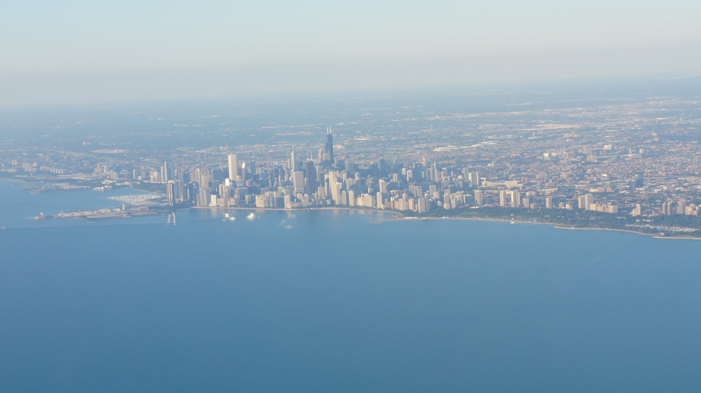
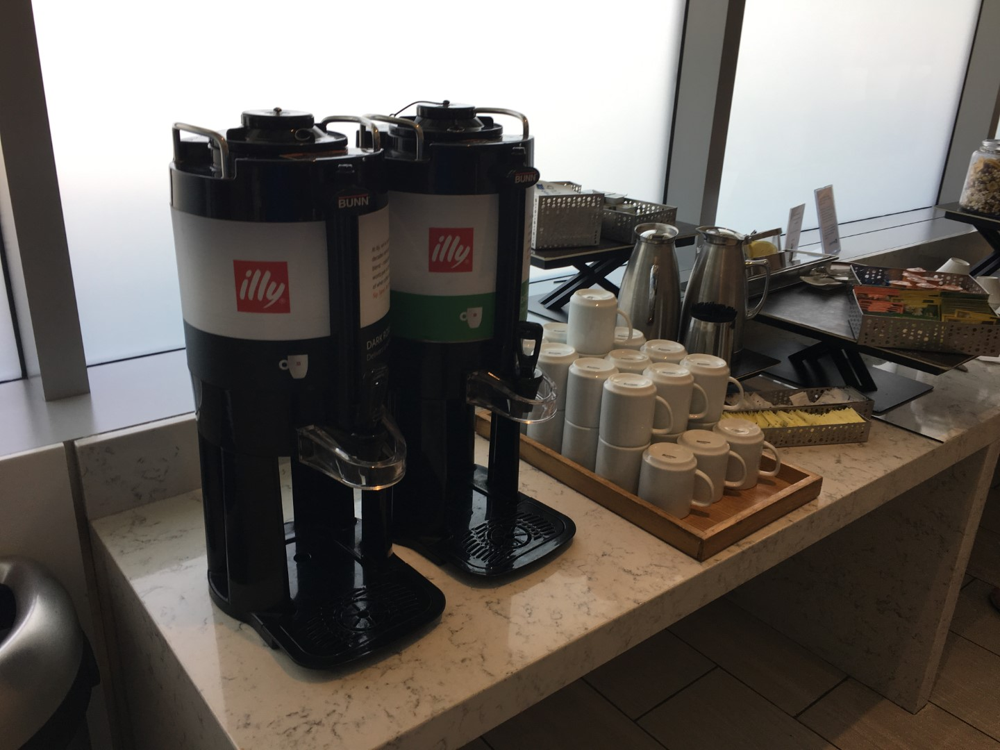
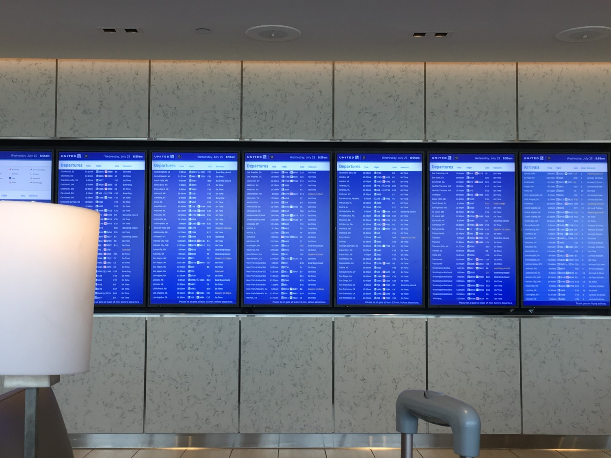

United Club B18, Chicago O'Hare
 After arriving from an earlier flight, I went all the way from Concourse F to the end of Concourse B. Well, initially I went to the one near C16 (crossing the tunnel). But that was packed and there was apparently no “breakfast”, so I went to the one near B18.
The entrance kind of sets high standards. Don’t go in there expecting a four-course meal. Go to the Polaris Lounge for that (or eat a hot dog, that’s what I missed). Past these doors, there’s a lounge attendant. They’ll check your credentials and scan your boarding pass.
Seating was so-so.
There’s also a back section.
All come with power outlets and usually include USB ports. Though only one in my block worked.
Fruits, silverware, and plates.
Decent pork or turkey sausages and eggs, heated, which kind of surpassed my expectations, not lying. I think there were condiments as well (ketchup, anyone?).
Bunch of breads that were quite ok.
Expresso-based drinks were also available…
 As well as regular coffee and decaf.
A bar if you want. I think it opens at 10:30, but I'm not for sure.
 And flight information screen for flight information. I had a six-hour layover, so my flight didn’t show up yet. When I was there, the only flight that was actually “called out” was an ANA flight to Tokyo, and it was someone walking around with a sign, so I’d have a notification set on my phone or something.
Soda machine (I may have had some drinks from there). And some other breads and condiments (standard). Wouldn’t touch them though. It seems that they’re farther away than the main buffet and I don’t know why they’d put it with the drinks.
For lunch, the food was switched at around 11:00. I believe these stays until the lounge closes. Also, around the time I decided to put the soda machine to good use and get a drink from it.
For the hot food, there was some noodle and rice stir fry or something?
A salad bar (which I appreciated; I needed some veggies).
Brownies, and soup of the day was cheddar broccoli. Crackers were avaialble too.
Did I mention the WiFi was fast? I didn’t measure it, but I used Instagram and Snapchat, which went really fast. I also had to download a few .pdf files, which also were very fast. So internet is not a problem at the United Club.
There were also cookies and other snacks (I think trail mix). Picture from my return trip, but the same cookie and trail mix selection was available.
Sum it up in a sentence: unless you want tarmac views, this is a decent lounge per U.S. standards.
Or for the old planes.
Photos were from my iPhone 6S. I couldn’t discreetly photograph the club with my camera, so I had no option.